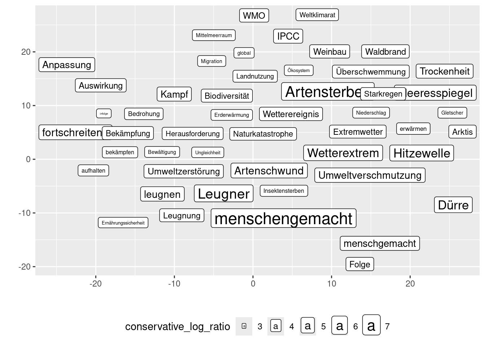

rm(list = ls())
library(tidyverse)
library(httr2)
library(jsonlite)
library(ggrepel)
url_api <- "http://127.0.0.1:5000"cwb-cads functionality
1 Setup
- get API access token via
/user/login
access.token <- str_interp("${url_api}/user/login") |>
request() |>
req_method("POST") |>
req_body_form(password = 'mmda-admin', username = 'admin') |>
req_perform() |>
magrittr::extract2("body") |>
rawToChar() |> fromJSON() |>
magrittr::extract2("access_token")2 Corpora
- corpus access via
/corpus/
corpora <- str_interp("${url_api}/corpus/") |>
request() |>
req_auth_bearer_token(access.token) |>
req_perform() |>
magrittr::extract2("body") |>
rawToChar() |> fromJSON() |>
tibble()
corpora- we use
"SZ-2018-2022"as an example here
corpus.id <- corpora |>
filter(cwb_id == "SZ-2018-2022") |>
pull(id)
corpus <- str_interp("${url_api}/corpus/${corpus.id}") |>
request() |>
req_auth_bearer_token(access.token) |>
req_perform() |>
magrittr::extract2("body") |> rawToChar() |> fromJSON() 2.1 Meta Data
- indexed structural (and positional) attributes can be accessed directly at
/corpus/<id>/
corpus |> magrittr::extract2("p_atts")[1] "lemma" "word" "pos" corpus |> magrittr::extract2("s_atts")[1] "s" "p" "text" "corpus" "issue" corpus |> magrittr::extract2("s_annotations") [1] "corpus_name" "issue_day" "text_date"
[4] "text_datum" "text_id" "text_month"
[7] "text_nr_sentences" "text_ressort" "text_rubrik"
[10] "text_seite_end" "text_seite_start" "text_seitentitel"
[13] "text_year" "p_type" s_annotationsbelong tos_atts(as long as the corpus was correctly indexed)- in this context, we refer to the
s_attaslevelwith correspondingkeys (such that meta data is stored inlevel_key) - they are not stored in the database by default
str_interp("${url_api}/corpus/${corpus.id}/meta/") |>
request() |>
req_auth_bearer_token(access.token) |>
req_perform() |>
magrittr::extract2("body") |> rawToChar() |> fromJSON() list()- we can store meta data from annotated s-attributes (
level_key) using aPUTrequest - we specify the
value_typehere (use"unicode"for categorical data)
str_interp("${url_api}/corpus/${corpus.id}/meta/") |>
request() |>
req_method('PUT') |>
req_body_json(list(level = 'text', key = 'year', value_type = 'unicode')) |>
req_auth_bearer_token(access.token) |>
req_perform() |>
magrittr::extract2("body") |> rawToChar() |> fromJSON()$key
[1] "year"
$value_type
[1] "unicode"str_interp("${url_api}/corpus/${corpus.id}/meta/") |>
request() |>
req_auth_bearer_token(access.token) |>
req_perform() |>
magrittr::extract2("body") |> rawToChar() |> fromJSON() |> tibble() |>
magrittr::extract2("annotations") [[1]]
key value_type
1 year unicode- and corresponding frequency counts (only reasonable for categorical data)
str_interp("${url_api}/corpus/${corpus.id}/meta/frequencies") |>
request() |>
req_url_query(level = 'text', key = 'year') |>
req_auth_bearer_token(access.token) |>
req_perform() |>
magrittr::extract2("body") |> rawToChar() |> fromJSON()- if you try to do this without storing the meta data first, you’ll get a
404
str_interp("${url_api}/corpus/${corpus.id}/meta/frequencies") |>
request() |>
req_url_query(level = 'text', key = 'month') |>
req_auth_bearer_token(access.token) |>
req_perform() |>
magrittr::extract2("body") |> rawToChar() |> fromJSON()Error in `req_perform()`:
! HTTP 404 Not Found.2.2 Subcorpora
- we create subcorpora for each year in
"SZ-2018-2022" - we need
level,key, the correspondingvalues_unicode, and thenameof the subcorpus
for (y in 2018:2022){
subcorpus <- str_interp("${url_api}/corpus/${corpus.id}/subcorpus/") |>
request() |>
req_method('PUT') |>
req_body_json(data = list(level = 'text', key = 'year', values_unicode = list(paste0("y", as.character(y))), name = as.character(y))) |>
req_auth_bearer_token(access.token) |>
req_perform() |>
magrittr::extract2("body") |> rawToChar() |> fromJSON()
}subcorpora <- str_interp("${url_api}/corpus/${corpus.id}/subcorpus/") |>
request() |>
req_auth_bearer_token(access.token) |>
req_perform() |>
magrittr::extract2("body") |> rawToChar() |> fromJSON()
subcorpora3 Keyword Analysis
- keyword analyses are comparisons between two frequency lists (“target” and “reference”)
- a frequency list can either be compiled from a whole corpus or a subcorpus
- two types of keyword analysis are supported:
- (sub-)corpus 1 vs. (sub-)corpus 2
- subcorpus vs. rest of the corpus
- mode is detected automatically
- i.e. providing a subcorpus as the target and its original corpus as the reference will automatically switch to subcorpus vs. rest (if not suppressed)
3.1 Example: SZ-2018-2022 vs. FAZ-2020-2022
corpus.id <- corpora |> filter(cwb_id == "SZ-2018-2022") |> pull(id)
corpus.id.reference <- corpora |> filter(cwb_id == "FAZ-2020-2022") |> pull(id)3.1.1 Creation
- different positional attributes can be compared to one another (
pandp_reference)- default:
lemma(fallback if not given in corpus:word)
- default:
kw.id <- request(str_interp("${url_api}/keyword/")) |>
req_body_json(list(corpus_id = corpus.id,
corpus_id_reference = corpus.id.reference)) |>
req_auth_bearer_token(access.token) |>
req_perform() |>
magrittr::extract2("body") |> rawToChar() |> fromJSON() |>
magrittr::extract2("id")3.1.2 Keyword Table
- the result of a keyword analysis is a frequency comparison table of individual
itemswith corresponding association measures (scores)
kw.table.page <- request(str_interp("${url_api}/keyword/${kw.id}/items")) |>
req_auth_bearer_token(access.token) |>
req_perform() |>
magrittr::extract2("body") |> rawToChar() |> fromJSON()
kw.table.page |>
magrittr::extract2("items") |>
magrittr::extract2("scores") |>
bind_rows(.id = "item") |>
pivot_wider(names_from = measure, values_from = score) |>
mutate(item = kw.table.page |> magrittr::extract2("items") |> magrittr::extract2("item"))- by default, the top
page_size=10items according tosort_by="conservative_log_ratio"are given - user should be able to switch between different association measures and paginate through results
kw.table.page <- request(str_interp("${url_api}/keyword/${kw.id}/items")) |>
req_url_query(sort_by = "log_likelihood", page_size = 20, page_number = 2) |>
req_auth_bearer_token(access.token) |>
req_perform() |>
magrittr::extract2("body") |> rawToChar() |> fromJSON()
kw.table.page |>
magrittr::extract2("items") |>
magrittr::extract2("scores") |>
bind_rows(.id = "item") |>
pivot_wider(names_from = measure, values_from = score) |>
mutate(item = kw.table.page |> magrittr::extract2("items") |> magrittr::extract2("item"))3.2 Example: SZ-2020 vs. SZ-2019
subcorpus.id <- subcorpora |> filter(name == "2020") |> pull(id)
subcorpus.id.reference <- subcorpora |> filter(name == "2019") |> pull(id)3.2.1 Creation
kw.id <- request(str_interp("${url_api}/keyword/")) |>
req_body_json(list(corpus_id = corpus.id,
subcorpus_id = subcorpus.id,
corpus_id_reference = corpus.id.reference,
subcorpus_id_reference = subcorpus.id.reference,
p = 'lemma',
p_reference = 'lemma')) |>
req_auth_bearer_token(access.token) |>
req_perform() |>
magrittr::extract2("body") |> rawToChar() |> fromJSON() |>
magrittr::extract2("id")3.2.2 Keyword Table
kw.items <- request(str_interp("${url_api}/keyword/${kw.id}/items")) |>
req_auth_bearer_token(access.token) |>
req_perform() |>
magrittr::extract2("body") |> rawToChar() |> fromJSON()
kw.items |>
magrittr::extract2("items") |>
magrittr::extract2("scores") |>
bind_rows(.id = "item") |>
pivot_wider(names_from = measure, values_from = score) |>
mutate(item = kw.items |> magrittr::extract2("items") |> magrittr::extract2("item"))3.3 Example: SZ-2020 vs. remainder of SZ-2018-2022
3.3.1 Creation
kw.id <- request(str_interp("${url_api}/keyword/")) |>
req_body_json(list(corpus_id = corpus.id,
subcorpus_id = subcorpus.id,
corpus_id_reference = corpus.id,
p = 'lemma',
p_reference = 'lemma')) |>
req_auth_bearer_token(access.token) |>
req_perform() |>
magrittr::extract2("body") |> rawToChar() |> fromJSON() |>
magrittr::extract2("id")3.3.2 Keyword Table
kw.items <- request(str_interp("${url_api}/keyword/${kw.id}/items")) |>
req_auth_bearer_token(access.token) |>
req_perform() |>
magrittr::extract2("body") |> rawToChar() |> fromJSON() |>
magrittr::extract2("items")
kw.items$scores |>
bind_rows(.id = "item") |>
pivot_wider(names_from = measure, values_from = score) |>
mutate(item = kw.items$item)3.3.3 Concordance Lines
- clicking on an item in the keyword table (or the semantic map, see below) should retrieve concordance lines featuring this item
- we retrieve concordance lines using the assisted query endpoint (
/query/assisted/), see below for more details - note that we performed the keyword analysis on the
p="lemma"layer
query <- request(str_interp("${url_api}/query/assisted")) |>
req_body_json(list(p = "lemma", items = list("Corona-Bonds"), corpus_id = corpus.id)) |>
req_auth_bearer_token(access.token) |>
req_perform() |>
magrittr::extract2("body") |> rawToChar() |> fromJSON()
query.id <- query |> magrittr::extract2("id")- access to concordance lines via
/query/<id>/concordance
concordance.lines <- request(str_interp("${url_api}/query/${query.id}/concordance")) |>
req_auth_bearer_token(access.token) |>
req_perform() |>
magrittr::extract2("body") |> rawToChar() |> fromJSON() |>
magrittr::extract2("lines")- actual concordance lines can be found in
tokens
concordance.lines |> magrittr::extract2("tokens") |> head(2)[[1]]
cpos is_filter_item offset out_of_window primary secondary
1 61538593 FALSE 0 FALSE Corona-Bonds Corona-Bonds
2 61538594 FALSE 1 FALSE oder oder
3 61538595 FALSE 2 FALSE nicht nicht
4 61538596 FALSE 3 FALSE ? ?
[[2]]
cpos is_filter_item offset out_of_window primary secondary
1 60625228 FALSE -8 FALSE Der der
2 60625229 FALSE -7 FALSE Hahn Hahn
3 60625230 FALSE -6 FALSE , ,
4 60625231 FALSE -5 FALSE das der
5 60625232 FALSE -4 FALSE sind sein
6 60625233 FALSE -3 FALSE die der
7 60625234 FALSE -2 FALSE Euro-Bonds Euro-Bond
8 60625235 FALSE -1 FALSE oder oder
9 60625236 FALSE 0 FALSE Corona-Bonds Corona-Bonds
10 60625237 FALSE 1 FALSE , ,
11 60625238 FALSE 2 FALSE die der
12 60625239 FALSE 3 FALSE Spanien Spanien
13 60625240 FALSE 4 FALSE und und
14 60625241 FALSE 5 FALSE Italien Italien
15 60625242 FALSE 6 FALSE fordern fordern
16 60625243 FALSE 7 FALSE , ,
17 60625244 FALSE 8 FALSE was was
18 60625245 FALSE 9 FALSE Deutschland Deutschland
19 60625246 FALSE 10 FALSE , ,
20 60625247 FALSE 11 TRUE die der
21 60625248 FALSE 12 TRUE Niederlande Niederlande
22 60625249 FALSE 13 TRUE , ,
23 60625250 FALSE 14 TRUE Österreich Österreich
24 60625251 FALSE 15 TRUE und und
25 60625252 FALSE 16 TRUE Finnland Finnland
26 60625253 FALSE 17 TRUE bei bei
27 60625254 FALSE 18 TRUE der der
28 60625255 FALSE 19 TRUE Videokonferenz Videokonferenz
29 60625256 FALSE 20 TRUE der der
30 60625257 FALSE 21 TRUE europäischen europäisch
31 60625258 FALSE 22 TRUE Staats- Staat
32 60625259 FALSE 23 TRUE und und
33 60625260 FALSE 24 TRUE Regierungschefs Regierungschef
34 60625261 FALSE 25 TRUE zur zu
35 60625262 FALSE 26 TRUE Corona-Krise Corona-Krise
36 60625263 FALSE 27 TRUE am an
37 60625264 FALSE 28 TRUE 26. 26.
38 60625265 FALSE 29 TRUE März März
39 60625266 FALSE 30 TRUE ablehnten ablehnen
40 60625267 FALSE 31 TRUE . .- meta data are stored in
structural
concordance.lines |> magrittr::extract2("structural")- when working on a subcorpus, the query must be defined on this subcorpus
- here:
"SZ-2020"
query <- request(str_interp("${url_api}/query/assisted")) |>
req_body_json(list(p = "lemma", items = list("Corona-Bonds"), corpus_id = corpus.id, subcorpus_id = subcorpus.id, s = "text")) |>
req_auth_bearer_token(access.token) |>
req_perform() |>
magrittr::extract2("body") |> rawToChar() |> fromJSON()
query.id <- query |> magrittr::extract2("id")request(str_interp("${url_api}/query/${query.id}/concordance")) |>
req_auth_bearer_token(access.token) |>
req_perform() |>
magrittr::extract2("body") |> rawToChar() |> fromJSON() |>
magrittr::extract2("lines") |>
magrittr::extract2("structural") |> pull(text_date) [1] "20200417" "20200402" "20200407" "20200406" "20200403" "20200424"
[7] "20200406" "20200406" "20200402" "20200428"- see below for more details on concordancing
3.3.4 Visualisation (Semantic Map)
- keyword tables (and collocation tables, see below) are visualised via semantic maps
- association measures and (initial) coordinates are provided by the backend
- semantic maps should display the top
page_size=200items according to thesort_by="conservative_log_ratio"association measure- user should be able to set these parameters
- we set
page_size=50here, frontend should make the map zoomable (best case: get more items until a user-defined cut-off)
3.3.4.1 Coordinates
- coordinates are provided automatically for all items
kw.table.page <- request(str_interp("${url_api}/keyword/${kw.id}/items")) |>
req_url_query(sort_by = "conservative_log_ratio", page_size = 50, page_number = 1) |>
req_auth_bearer_token(access.token) |>
req_perform() |>
magrittr::extract2("body") |> rawToChar() |> fromJSON()
coordinates <- kw.table.page |>
magrittr::extract2("coordinates") |>
tibble()
coordinates- note that two types of coordinates are given:
- initial coordinates as determined by the backend
- user coordinates that take precedence if defined via dragging on the semantic map by the user
- semantic map = two-dimensional arrangement using coordinates + size = association measure
scores <- kw.table.page |>
magrittr::extract2("items") |>
magrittr::extract2("scores") |>
bind_rows(.id = "item") |>
pivot_wider(names_from = measure, values_from = score) |>
mutate(item = kw.table.page |> magrittr::extract2("items") |> magrittr::extract2("item"))
map <- scores |>
left_join(coordinates, by = "item") |>
mutate(x = if_else(!is.na(x_user), x_user, x),
y = if_else(!is.na(y_user), y_user, y)) |>
select(item, conservative_log_ratio, x, y)
map |>
filter(conservative_log_ratio > 0) |>
ggplot(aes(x = x, y = y, label = item)) +
geom_label_repel(aes(size = conservative_log_ratio), max.overlaps = Inf, point.size = NA, min.segment.length = Inf) +
xlab("") + ylab("") +
theme(legend.position = "bottom")- we filter out all items with
conservative_log_ratio <= 0here, which is probably reasonable- at the very least, items with
E11 >= O11should not be displayed - no defaults implemented!
- some reasonable defaults can be proposed though
- best case scenario: user-defined
- at the very least, items with
3.3.4.2 Interaction
clicking on an item should retrieve relevant concordance lines, see above
dragging an item updates its user coordinates
semantic_map.id <- coordinates |> pull(semantic_map_id) |> head(1)
coordinates <- request(str_interp("${url_api}/semantic-map/${semantic_map.id}/coordinates/")) |>
req_method('put') |>
req_body_json(list(item = "Corona-Bonds", x_user = 35, y_user = 20)) |>
req_auth_bearer_token(access.token) |>
req_perform() |>
magrittr::extract2("body") |> rawToChar() |> fromJSON()
map <- scores |>
left_join(coordinates, by = "item") |>
mutate(x = if_else(!is.na(x_user), x_user, x),
y = if_else(!is.na(y_user), y_user, y)) |>
select(item, conservative_log_ratio, x, y)
map |>
filter(conservative_log_ratio > 0) |>
ggplot(aes(x = x, y = y, label = item)) +
geom_label_repel(aes(size = conservative_log_ratio), max.overlaps = Inf, point.size = NA, min.segment.length = Inf) +
xlab("") + ylab("") +
theme(legend.position = "bottom")- dropping two items together will create a discourseme, see separate document
4 Query
4.1 Creation
- we create a query using the full query end point here
- for assisted mode, see above
- for creating queries from discoursemes, see separate document
query <- str_interp("${url_api}/query/") |>
request() |>
req_body_json(list(corpus_id = corpus.id, cqp_query = '[lemma="Klimawandel"%cd] | [lemma="global"] [lemma="Erwärmung"]')) |>
req_auth_bearer_token(access.token) |>
req_perform() |> magrittr::extract2("body") |> rawToChar() |> fromJSON()
query.id <- query |> magrittr::extract2("id")4.2 Concordancing
concordance.lines <- request(str_interp("${url_api}/query/${query.id}/concordance")) |>
req_auth_bearer_token(access.token) |>
req_perform() |>
magrittr::extract2("body") |> rawToChar() |> fromJSON() |>
magrittr::extract2("lines")concordance.lines |> names()[1] "discourseme_ranges" "id" "structural"
[4] "tokens" concordance.lines |>
magrittr::extract2("tokens") |>
head(1)[[1]]
cpos is_filter_item offset out_of_window primary secondary
1 51170210 FALSE -26 TRUE Und und
2 51170211 FALSE -25 TRUE dann dann
3 51170212 FALSE -24 TRUE gibt geben
4 51170213 FALSE -23 TRUE es es
5 51170214 FALSE -22 TRUE die der
6 51170215 FALSE -21 TRUE vielen vieler
7 51170216 FALSE -20 TRUE Dinge Ding
8 51170217 FALSE -19 TRUE , ,
9 51170218 FALSE -18 TRUE die der
10 51170219 FALSE -17 TRUE in in
11 51170220 FALSE -16 TRUE dem der
12 51170221 FALSE -15 TRUE Buch Buch
13 51170222 FALSE -14 TRUE nicht nicht
14 51170223 FALSE -13 TRUE vorkommen vorkommen
15 51170224 FALSE -12 TRUE : :
16 51170225 FALSE -11 TRUE Computer Computer
17 51170226 FALSE -10 FALSE , ,
18 51170227 FALSE -9 FALSE Internet Internet
19 51170228 FALSE -8 FALSE , ,
20 51170229 FALSE -7 FALSE Digitalisierung Digitalisierung
21 51170230 FALSE -6 FALSE und und
22 51170231 FALSE -5 FALSE , ,
23 51170232 FALSE -4 FALSE vor vor
24 51170233 FALSE -3 FALSE allem alle
25 51170234 FALSE -2 FALSE , ,
26 51170235 FALSE -1 FALSE der der
27 51170236 FALSE 0 FALSE Klimawandel Klimawandel
28 51170237 FALSE 1 FALSE . .4.2.1 Filtering
- we can filter concordance lines according to certain items in the context (
out_of_window=FALSE)
item = "Erderwärmung"
concordance.lines <- request(str_interp("${url_api}/query/${query.id}/concordance")) |>
req_url_query(filter_item = item, filter_item_p_att = 'lemma') |>
req_auth_bearer_token(access.token) |>
req_perform() |>
magrittr::extract2("body") |> rawToChar() |> fromJSON() |>
magrittr::extract2("lines")concordance.lines |>
magrittr::extract2("tokens") |> head(1)[[1]]
cpos is_filter_item offset out_of_window primary secondary
1 11155951 FALSE -9 FALSE In in
2 11155952 FALSE -8 FALSE Niger Niger
3 11155953 FALSE -7 FALSE und und
4 11155954 FALSE -6 FALSE damit damit
5 11155955 FALSE -5 FALSE mitten mitten
6 11155956 FALSE -4 FALSE in in
7 11155957 FALSE -3 FALSE der der
8 11155958 FALSE -2 FALSE Sahelzone Sahelzone
9 11155959 FALSE -1 FALSE sind sein
10 11155960 FALSE 0 FALSE Klimawandel Klimawandel
11 11155961 FALSE 1 FALSE und und
12 11155962 TRUE 2 FALSE Erderwärmung Erderwärmung
13 11155963 FALSE 3 FALSE in in
14 11155964 FALSE 4 FALSE voller voll
15 11155965 FALSE 5 FALSE Härte Härte
16 11155966 FALSE 6 FALSE zu zu
17 11155967 FALSE 7 FALSE spüren spüren
18 11155968 FALSE 8 FALSE . .4.2.2 Sorting
- we can sort according to certain offsets
- note that this only works with sort_order != ‘random’
concordance.lines <- request(str_interp("${url_api}/query/${query.id}/concordance")) |>
req_url_query(sort_by_offset = 1, sort_by_p_att = 'lemma', sort_order = 'ascending', page_size = 20, page_number = 150) |>
req_auth_bearer_token(access.token) |>
req_perform() |>
magrittr::extract2("body") |> rawToChar() |> fromJSON() |>
magrittr::extract2("lines")for (i in 1:20){
concordance.lines |>
magrittr::extract2("tokens") |> magrittr::extract2(i) |>
tibble() |>
filter(offset == 1) |>
pull(secondary) |>
print()
}[1] "einstellen"
[1] "einstellen"
[1] "einstellen"
[1] "eintreten"
[1] "einwirken"
[1] "einziehen"
[1] "einzigartig"
[1] "endlich"
[1] "engagieren"
[1] "enorm"
[1] "entdecken"
[1] "entfalten"
[1] "entgegen"
[1] "entgegenstellen"
[1] "entgegentreten"
[1] "entgegenwirken"
[1] "entgegenwirken"
[1] "entgegenwirken"
[1] "entgegenwirken"
[1] "entgegenwirken"4.3 Breakdown
- breakdown of the query shows which items were found (and their absolute and relative frequency (instances per million (ipm) in the corpus))
breakdown <- request(str_interp("${url_api}/query/${query.id}/breakdown")) |>
req_auth_bearer_token(access.token) |>
req_url_query(p = "lemma") |>
req_perform() |>
magrittr::extract2("body") |> rawToChar() |> fromJSON() |>
magrittr::extract2("items") |>
tibble()breakdown|> select(item, ipm, freq, nr_tokens)- note that nr_tokens (and ipm) is correctly calculated in subcorpora
subcorpus.query.id <- str_interp("${url_api}/query/") |>
request() |>
req_body_json(list(corpus_id = corpus.id, subcorpus_id = subcorpus.id, cqp_query = '[lemma="Klimawandel"%cd] | [lemma="global"] [lemma="Erwärmung"]')) |>
req_auth_bearer_token(access.token) |>
req_perform() |> magrittr::extract2("body") |> rawToChar() |> fromJSON() |>
magrittr::extract2("id")
request(str_interp("${url_api}/query/${subcorpus.query.id}/breakdown")) |>
req_auth_bearer_token(access.token) |>
req_url_query(p = "lemma") |>
req_perform() |>
magrittr::extract2("body") |> rawToChar() |> fromJSON() |>
magrittr::extract2("items") |>
tibble() |>
select(item, ipm, freq, nr_tokens)4.4 Meta Distribution
- meta data must be stored in database for this to work (see above)
- meta distribution via annotated (
key) s-attribute (level) with p-attribute breakdown (p)
query.meta <- request(str_interp("${url_api}/query/${query.id}/meta")) |>
req_auth_bearer_token(access.token) |>
req_url_query(level = "text", key = "year", p = "lemma") |>
req_perform() |>
magrittr::extract2("body") |> rawToChar() |> fromJSON()
query.meta- distribution across categorical meta data can be visualised using barplots
query.meta |> mutate(year = lubridate::floor_date(as.Date(value, "y%Y"), "year")) |>
ggplot(aes(x = year, y = ipm, fill = item)) +
geom_col()visualisation is only reasonable for categorical data
other visualisations possible but not implemented
again, if you try to do this without storing the meta data first, you’ll get a
404
query.meta <- request(str_interp("${url_api}/query/${query.id}/meta")) |>
req_auth_bearer_token(access.token) |>
req_url_query(level = "text", key = "month", p = "lemma") |>
req_perform() |>
magrittr::extract2("body") |> rawToChar() |> fromJSON()Error in `req_perform()`:
! HTTP 404 Not Found.4.5 Collocation
4.5.1 Creation
- collocation analyses are linked to queries (words that appear in the vicinity of the query matches)
collocation <- request(str_interp("${url_api}/query/${query.id}/collocation")) |>
req_auth_bearer_token(access.token) |>
req_url_query(p = "lemma") |>
req_perform() |>
magrittr::extract2("body") |> rawToChar() |> fromJSON()
collocation.id <- collocation |> magrittr::extract2("id")4.5.2 Collocation Table
- cf. keyword table
coll.table.page <- request(str_interp("${url_api}/collocation/${collocation.id}/items")) |>
req_auth_bearer_token(access.token) |>
req_perform() |>
magrittr::extract2("body") |> rawToChar() |> fromJSON()
coll.table.page |>
magrittr::extract2("items") |>
magrittr::extract2("scores") |>
bind_rows(.id = "item") |>
pivot_wider(names_from = measure, values_from = score) |>
mutate(item = coll.table.page |> magrittr::extract2("items") |> magrittr::extract2("item"))4.5.3 Semantic Map
- cf. semantic map in keyword analyses
coll.table.page <- request(str_interp("${url_api}/collocation/${collocation.id}/items")) |>
req_url_query(page_size = 50) |>
req_auth_bearer_token(access.token) |>
req_perform() |>
magrittr::extract2("body") |> rawToChar() |> fromJSON()
scores <- coll.table.page |>
magrittr::extract2("items") |>
magrittr::extract2("scores") |>
bind_rows(.id = "item") |>
pivot_wider(names_from = measure, values_from = score) |>
mutate(item = coll.table.page |> magrittr::extract2("items") |> magrittr::extract2("item"))
coordinates <- coll.table.page |>
magrittr::extract2("coordinates") |>
tibble()
map <- scores |>
left_join(coordinates, by = "item") |>
mutate(x = if_else(!is.na(x_user), x_user, x),
y = if_else(!is.na(y_user), y_user, y)) |>
select(item, conservative_log_ratio, x, y)
map |>
filter(conservative_log_ratio > 0) |>
ggplot(aes(x = x, y = y, label = item)) +
geom_label_repel(aes(size = conservative_log_ratio), max.overlaps = Inf, point.size = NA, min.segment.length = Inf) +
xlab("") + ylab("") +
theme(legend.position = "bottom")
4.5.4 Concordancing
- note that when clicking on an item here, concordance lines have to be filtered according to initial query and the additional filter item
- you can use the additonal filter item as an argument at
/query/<id>/concordance
item = "Artensterben"
concordance.lines <- request(str_interp("${url_api}/query/${query.id}/concordance")) |>
req_url_query(filter_item = item, filter_item_p_att = 'lemma') |>
req_auth_bearer_token(access.token) |>
req_perform() |>
magrittr::extract2("body") |> rawToChar() |> fromJSON() |>
magrittr::extract2("lines")
concordance.lines |>
magrittr::extract2("tokens") |> head(1)[[1]]
cpos is_filter_item offset out_of_window primary
1 682622 FALSE -3 FALSE In
2 682623 FALSE -2 FALSE Zeiten
3 682624 FALSE -1 FALSE des
4 682625 FALSE 0 FALSE Klimawandels
5 682626 FALSE 1 FALSE ,
6 682627 TRUE 2 FALSE Artensterbens
7 682628 FALSE 3 FALSE und
8 682629 FALSE 4 FALSE der
9 682630 FALSE 5 FALSE absehbaren
10 682631 FALSE 6 FALSE Endlichkeit
11 682632 FALSE 7 FALSE der
12 682633 FALSE 8 FALSE Rohstoffe
13 682634 FALSE 9 FALSE ist
14 682635 FALSE 10 FALSE elitärer
15 682636 FALSE 11 TRUE ,
16 682637 FALSE 12 TRUE umweltzerstörender
17 682638 FALSE 13 TRUE Milliardärs-Weltraumtourismus
18 682639 FALSE 14 TRUE pervers
19 682640 FALSE 15 TRUE ,
20 682641 FALSE 16 TRUE passt
21 682642 FALSE 17 TRUE allerdings
22 682643 FALSE 18 TRUE gut
23 682644 FALSE 19 TRUE ins
24 682645 FALSE 20 TRUE zerstörerische
25 682646 FALSE 21 TRUE Zeitalter
26 682647 FALSE 22 TRUE des
27 682648 FALSE 23 TRUE Anthropozän
28 682649 FALSE 24 TRUE .
secondary
1 in
2 Zeit
3 der
4 Klimawandel
5 ,
6 Artensterben
7 und
8 der
9 absehbar
10 Endlichkeit
11 der
12 Rohstoff
13 sein
14 elitär
15 ,
16 umweltzerstörend
17 Milliardärs-Weltraumtourismus
18 pervers
19 ,
20 passen
21 allerdings
22 gut
23 in
24 zerstörerisch
25 Zeitalter
26 der
27 Anthropozän
28 .